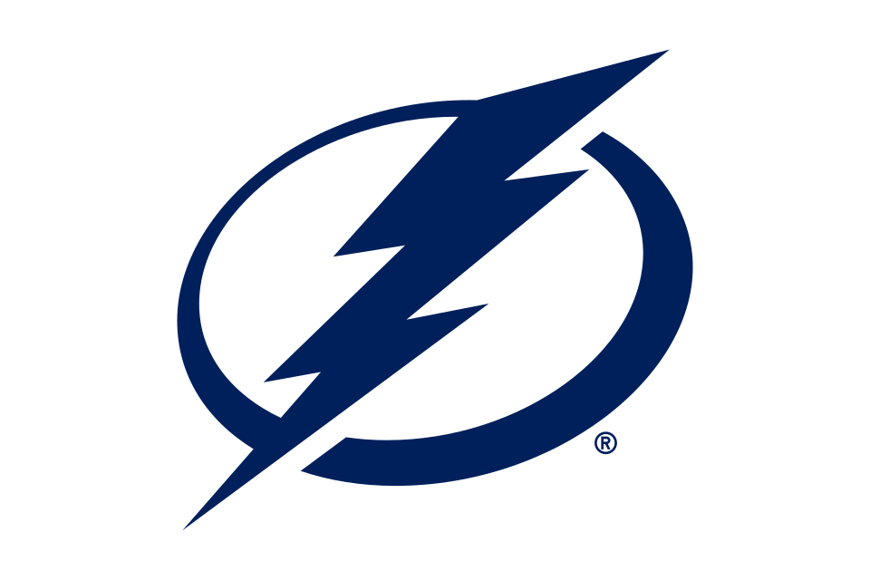

Blackhawks hold players-only meeting after loss
Chicago falls behind 7-0 to Carolina in losing sixth straight


Central · Western Conference · 40 headlines in the last 30 days

 Blackhawks vs. Hurricanes
Blackhawks vs. Hurricanes
 Blackhawks vs. Lightning
Blackhawks vs. LightningChicago falls behind 7-0 to Carolina in losing sixth straight

The Chicago Blackhawks were blown out on the road. This time, it came at the hands of the Stanley Cup champion Carolina Hurricanes.

(AP) — Jordan Martinook scored two of Carolina’s four first-period goals in the Hurricanes’ 9-2 win over the Chicago Blackhawks on Saturday night.Andrei Svechnikov added two goals, and Seth Jarvis, Jackson Blake, Sebastian Aho, Shayne Gostisbehere and Alexander Nikishin, making his season debut, also had goals.


The Chicago Blackhawks have a nice goal scorer in Roman Kantserov. He is a bright spot on a bad team.

The Chicago Blackhawks were defeated by the Tampa Bay Lightning Thursday night, and Ilya Mikheyev had a lot to do with it.

(AP) — Ilya Mikheyev scored twice to back Andrei Vasilevskiy and the Tampa Bay Lightning beat the Chicago Blackhawks 4-1 on Thursday night to remain perfect at home this season.Victor Hedman and Ryan McDonagh also scored.

The Chicago Blackhawks will face the Tampa Bay Lightning on Thursday night in Tampa.

The NHL on TNT crew blasted the Chicago Blackhawks on national television, putting more scrutiny on their struggles.

Forward has first multipoint game; Nazar scores twice for Chicago, which drops fourth in row

(AP) — Sandis Vilmanis had the first two-goal game of his career, Sam Reinhart provided a goal and two assists, and the Florida Panthers beat the Chicago Blackhawks 5-3 on Wednesday night to wrap up a three-game homestand.Seth Jones scored against his former team and Carter Verhaeghe had a goal and an assist for the…

The Chicago Blackhawks have been swept by the Florida Panthers this season following their loss on Wednesday night.

Florida Panthers veteran Lars Eller will skate in his 1,200th career NHL regular-season game tonight, joining 141 players who have reached this milestone.

The Chicago Blackhawks, still looking for their first road win, are in Sunrise to take on the Florida Panthers.

Three of the top Chicago Blackhawks prospects, currently with the AHL's Rockford IceHogs, are still looking for their first points.
Chicago Blackhawks (4-10-1, in the Central Division) vs. Florida Panthers (8-5-2, in the Atlantic Division)Sunrise, Florida; Wednesday, 7:30 p.

CHICAGO (AP) — The slumping Chicago Blackhawks lost another key player when Patrick Kane left Monday night's game against Colorado with an upper-body injury.Kane departed in the second period of Chicago's 5-2 loss.


Forward does not return after taking last shift at 14:53 of second period, expected to miss ‘couple of games’

The Colorado Avalanche came to the United Center and took two points from the Chicago Blackhawks.


CHICAGO (AP) — Nazem Kadri and Jaden Schwartz scored two goals apiece, and the Colorado Avalanche beat the struggling Chicago Blackhawks 5-2 on Monday night for their third consecutive win. Hughes had two assists as Colorado improved to 15-4-0 in its last 19 games against Chicago.

Logan O’Connor rejoins the lineup following his father’s memorial service as Colorado reshuffles its depth to battle the Blackhawks and navigate a critical back-to-back road trip.

It’s Colorado Avalanche game day!

Chicago hopes their new threads will get them off the slide.

The Chicago Blackhawks will play the Colorado Avalanche at the United Center on Monday night.
The Chicago Blackhawks, along with the entire National Hockey League, have revealed their 2026-27 'Hometown Remix' uniforms.

BOSTON (AP) — Elias Lindholm scored in overtime as the Bruins rallied from a two-goal deficit in the third period to top the Chicago Blackhawks 5-4 and extend Boston’s home winning streak to five games.Mason Lohrei scored to pull Boston within a goal and Morgan Geekie’s second goal of the season with 12 seconds left…

Pastrnak moves into sole possession of third on Boston's goal list; Bedard scores for Chicago

BOSTON (AP) — Elias Lindholm scored in overtime as the Bruins rallied from a two-goal deficit in the third period to top the Chicago Blackhawks 5-4 and extend Boston’s home winning streak to five games.Mason Lohrei scored to pull Boston within a goal and Morgan Geekie's second goal of the season with 12 seconds left…

The Chicago Blackhawks played their best game of the season, but they fell to the Boston Bruins in overtime.

Chicago Blackhawks star Patrick Kane has become the 21st player in NHL history to have 900 career assists.

The Chicago Blackhawks are looking to get their first road win of the season. This will be at TD Garden against the Boston Bruins.

The Chicago Blackhawks would certainly save their rebuild if they added Nikita Kucherov to the mix.

The Chicago Blackhawks are in an incredibly tough Central Division. How does this group of teams look after one month?
Chicago Blackhawks (4-9, in the Central Division) vs. Boston Bruins (9-4-1, in the Atlantic Division)Boston; Saturday, 1 p.